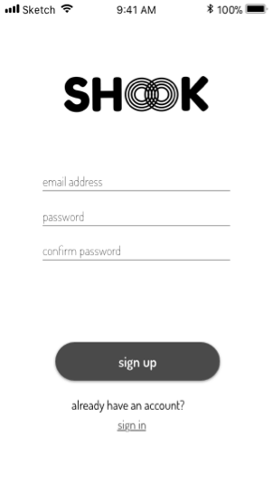
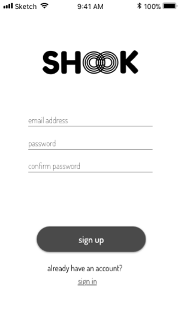
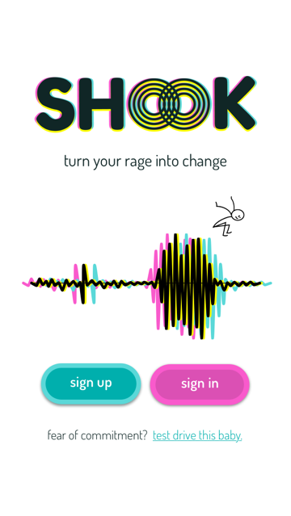
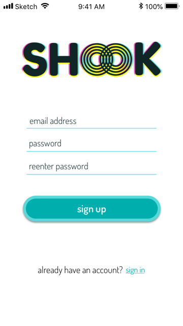
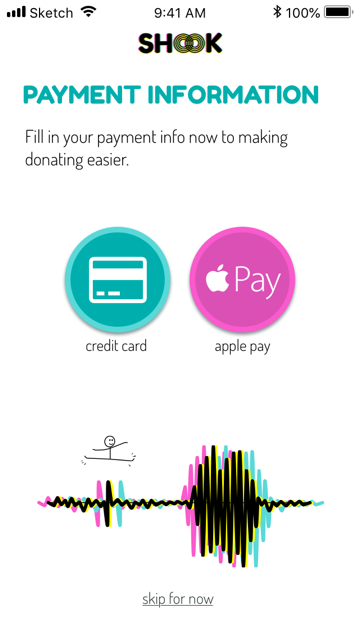
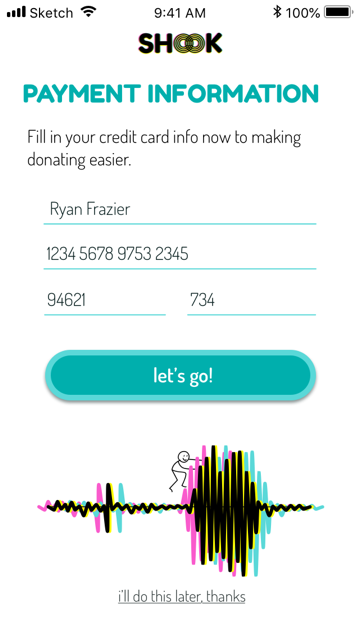
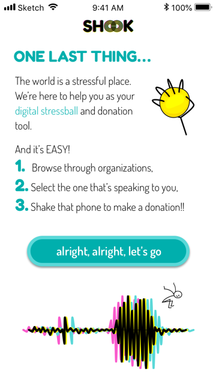

Summary
Drop is a cloud file sharing system to keep your digital life organized and collaborate with team members.
Problem
Create a web app where users can create or upload content, share it, and work within projects where there are multiple contributors.
Solution
The site is Drop. It is a webapp where users can upload images, create notes, and save urls. Teams can also use boxes to house content that’s all in a similar project.
Research
Survey Highlights
| 100% | of respondents wanted to be able to slook at content across platforms |
| 100% | saw value in content being shareable. |
| Conclusion: | A responsive design was essential to reaching users across their many platforms. |
Branding
palette and logo were developed. They are fun, appealing to both younger and older users but still have some polish making the brand feel reliable and deliberate.
Wireframes & User Testing
During user testing of the wireframes, some of the content was moved to make it more visible and make the flow more intuitive.
- People could not find the location of the settings and were confused at the location of some of the buttons. I resolved this by moving the user settings from the bottom left of the screen to the top, right hand side.
- People didn’t understand what a “box” was, so I added a description in the hero.
- People hated pressing a “back” button after adding content. I came up with two solutions, one being a “saved!” check-mark that is visible when content has saved. The second was a save button that would bring you back to the main menu. Since content was saving automatically, I opted for the first solution.
I took all the feedback and my prototypes, and began to build out the site, using HTML, CSS, and Javascript. It may have been the most rewarding part, watching the designs come to life.


 



Mockups
- 
- 
- 
- 
- 